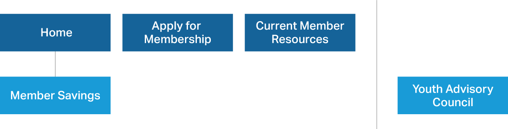
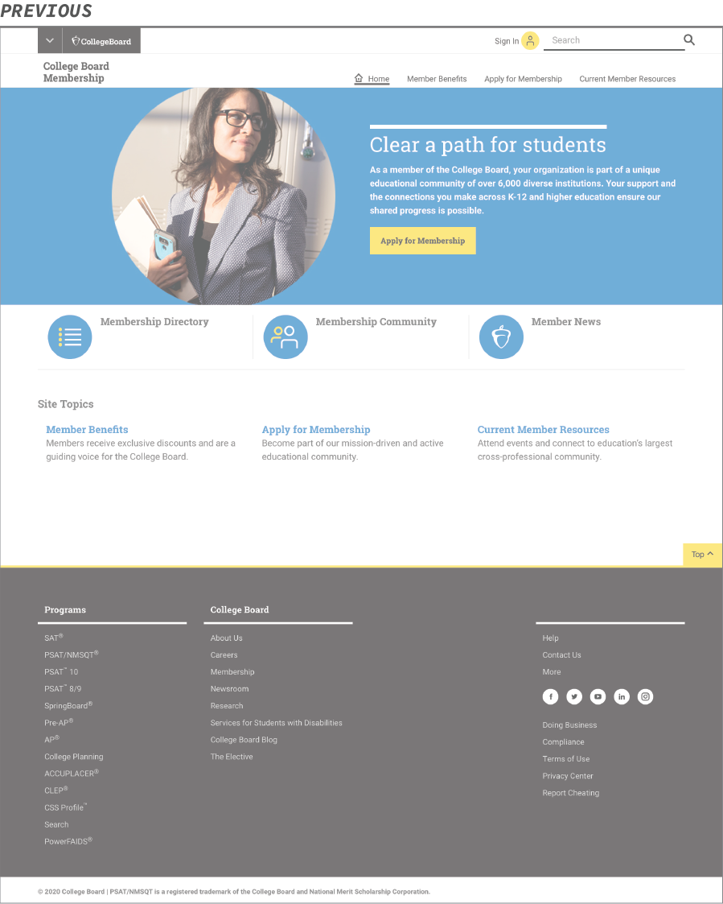
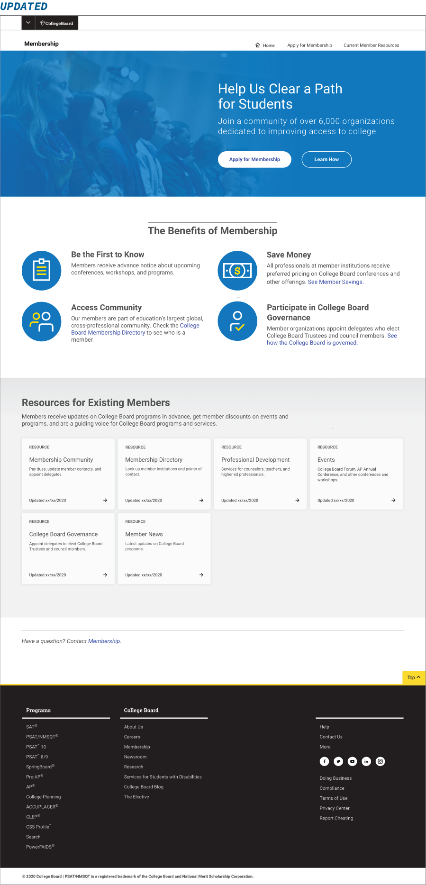
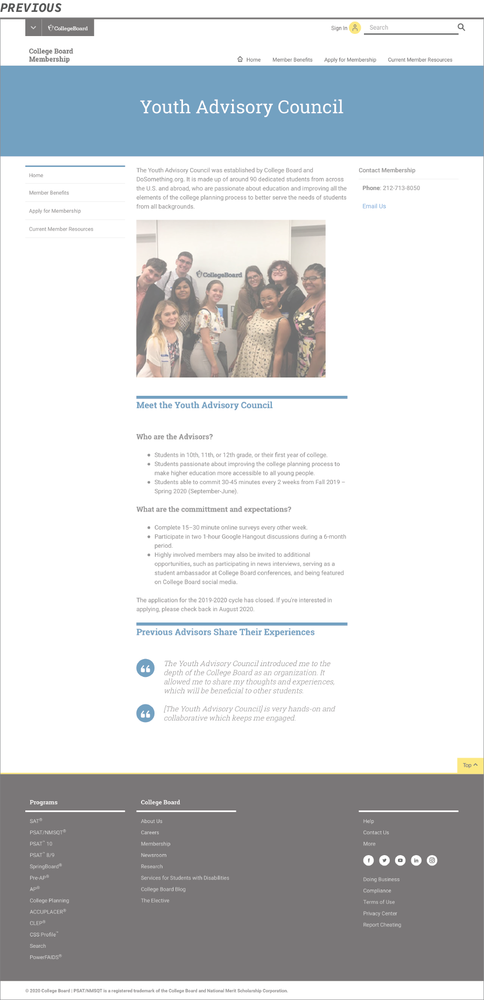

CollegeBoard Membership
College Board members are part of a unique educational community of over 6,000 diverse organizations dedicated to improving access to college.
My Role
As College Board is migrating their sites, I was brought in to support this update.
College Board is migrating and refreshing all their sites over the next few years. As the visual lead for some of their programs, Membership being one of them, I worked with content strategy, web production, and our global standards team to make sure that the designs would work with the migration and with our design system.
Steps We Took
We first interviewed the product owner to get their user needs. Since this is a relatively small site, we then prioritized the needs and were able to cover all of them. We looked over the structure and content of the existing site and use this time to reorganize and consolidate the site.
The main goal of the site was to get institutions to apply for membership and a secondary goal was to allow current members to access what Membership provided: Community, Directory, Professional Development, Events, Governance, and News.
Working with the content strategist, multiple iterations of the design and site map were created as we expanded and contracted to five. We did this because I found that the pages had a lot of duplicative information and as a whole, we were aiming for a leaner site. The final site map:
Updates in Content and Design
Home Page
One of the biggest changes to the site was the home page. The previous page mainly linked out to other parts of the site or global site, It didn't tell you what Membership was about and what benefits were gained from joining; users had to go to different page to find out about that. We felt that it was important to highlight it on the homepage to entice the audience to want to learn more and apply right away, instead of having to go to another page to find out more.

Apply For Membership Page
Another page that went through major revisions was the Apply for Membership page. Previously, it provided a lot of information, but it wasn't straightforward, so it left a lot of questions that wasn't easily found anywhere on the site. The updated page addressed it by making clear steps with bullets on what was needed and what needed to be gathered. We also included an FAQ section for specific questions that the product owner was asked often enough via email to pull out.

Member Savings
This was originally the Member Benefits page mentioned above. Since we moved most of the relevant content to the Home page, we highlighted the Member Savings, since it is still an important benefit of the membership. We did move it as a sub-section of the benefit on the home page, versus keeping it top-level on the site map.


Current Member Resources Page
We tried to remove this page, since all the information was also on the home page, however, the product owner felt that it was crucial to have it as a separate page. In keeping with the leaner site, we kept the page utilitarian and cut a lot of the duplicative information out.

Youth Advisory Council Page
This page was changed the least, we simplified content and made sure it aligned with the new standards. This page is not part of the main structure because the nature of the program.


Additional Challenges
Since we were in the interim of updating our design system, the pages I designed were in the newer Apricot 4.1. The final site was built in the older Apricot 3.4 and will be updated to the new design system in the near future.
Due to this, the project made me work closely with the global standards team, as they were still working through documentation, we had to sync with members of their team often. We also had to collaborate closely with the web production, as this was a newer process for all of us, to see what was and wasn't possible. We found that D8 was much stricter than D7 so there was a lot less customization possible.
The live site can be found [here](target="_blank" https://membership.collegeboard.org/).